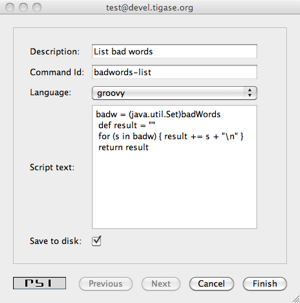

Table of Contents
Artur Hefczyc <artur.hefczyc@tigase.net> v2.0, June 2014: Reformatted for AsciiDoc. :toc: :numbered: :website: http://tigase.net/ :Date: 2010-01-06 20:22
Scripting support is a basic API built-in to the Tigase server and automatically available to any component at no extra cost. This framework, however, can only access existing component variables which are inherited by your code from parent classes. It can not access any data or any structures you added in your component. A little effort is needed to expose some of your data to the scripting API.
This guide shows how to extend existing scripting API with your component specific data structures.
Integrating your component implementation with the scripting API is as simple as the code below:
private static final String BAD_WORDS_VAR = "badWords";
private static final String WHITE_LIST_VAR = "whiteList";
@Override
public void initBindings(Bindings binds) {
super.initBindings(binds);
binds.put(BAD_WORDS_VAR, badWords);
binds.put(WHITE_LIST_VAR, whiteList);
}This way you expose two the component variables: 'badWords' and 'whiteList' to scripts under names the same names - two defined constants. You could use different names of course but it is always a good idea to keep things simple, hence we use the same variable names in the component and in the script.
This is it, actually, all done. Almost… In our old implementation these two variables are Java arrays of 'String\'s. Therefore we can only change their elements but we can not add or remove elements from these structures inside the script. This is not very practical and it puts some serious limits on the script’s code. To overcome this problem I have changed the test component code to keep bad words and whitelist in \'java.util.Set' collection. This gives us enough flexibility to manipulate data.
As our component is now ready to cooperate with the scripting API, I will demonstrate now how to add remove or change elements of these collections using a script and ad-hoc commands.

First, browse the server service discovery and double click on the test component. If you use Psi client this should bring to you a new window with ad-hoc commands list. Other clients may present available ad-hoc commands differently.
The screenshot below show how this may look like. You have to provide some description for the script and an ID string. We use Groovy in this guide but you can as well use any different scripting language.

Please refer to the Tigase scripting documentation for all the details how to add support for more languages. From the Tigase API point of view it all looks the same. You have to select a proper language from the pull-down list on windows shown on the right. If your preferred language is not on the list, it means it is not installed properly and Tigase couldn’t detect it.
The script to pull a list of current bad words can be as simple as the following Groovy code:
def badw = (java.util.Set)badWords
def result = ""
for (s in badw) { result += s + "\n" }
return resultAs you see from the code, you have to reference your component variables to a variables in your script to make sure a correct type is used. The rest is very simple and is a pure scripting language stuff.
Load the script on to the server and execute it. You should receive a new window with a list of all bad words currently used by the spam filter.
Below is another simple script which allows updating (adding/removing) bad words from the list.
import tigase.server.Command
import tigase.server.Packet
def WORDS_LIST_KEY = "words-list"
def OPERATION_KEY = "operation"
def REMOVE = "Remove"
def ADD = "Add"
def OPERATIONS = [ADD, REMOVE]
def badw = (java.util.Set)badWords
def Packet p = (Packet)packet
def words = Command.getFieldValue(p, WORDS_LIST_KEY)
def operation = Command.getFieldValue(p, OPERATION_KEY)
if (words == null) {
// No data to process, let's ask user to provide
// a list of words
def res = (Packet)p.commandResult(Command.DataType.form)
Command.addFieldValue(res, WORDS_LIST_KEY, "", "Bad words list")
Command.addFieldValue(res, OPERATION_KEY, ADD, "Operation",
(String[])OPERATIONS, (String[])OPERATIONS)
return res
}
def words_list = words.tokenize(",")
if (operation == ADD) {
words_list.each { badw.add(it.trim()) }
return "Words have been added."
}
if (operation == REMOVE) {
words_list.each { badw.remove(it.trim()) }
return "Words have been removed."
}
return "Unknown operation: " + operationThese two scripts are just the beginning. The possibilities are endless and with the simple a few lines of code in your test component you can then extend your application at runtime with scripts doing various things, you can reload scripts, add and remove them extending and modifying functionality as you need. No need to restart the server, no need to recompile the code and you can use whatever scripting language you like.
Of course, scripts for whitelist modifications would look exactly the same and it doesn’t make sense to attach them here.
Here is a complete code of the test component with the new method described at the beginning and data structures changed from array of 'String\'s to Java \'Set':
import java.util.Arrays;
import java.util.Collections;
import java.util.Map;
import java.util.Set;
import java.util.concurrent.CopyOnWriteArraySet;
import java.util.logging.Level;
import java.util.logging.Logger;
import javax.script.Bindings;
import tigase.server.AbstractMessageReceiver;
import tigase.server.Packet;
import tigase.stats.StatisticsList;
import tigase.util.JIDUtils;
import tigase.xmpp.StanzaType;
public class TestComponent extends AbstractMessageReceiver {
private static final Logger log =
Logger.getLogger(TestComponent.class.getName());
private static final String BAD_WORDS_KEY = "bad-words";
private static final String WHITELIST_KEY = "white-list";
private static final String PREPEND_TEXT_KEY = "log-prepend";
private static final String SECURE_LOGGING_KEY = "secure-logging";
private static final String ABUSE_ADDRESS_KEY = "abuse-address";
private static final String NOTIFICATION_FREQ_KEY = "notification-freq";
private static final String BAD_WORDS_VAR = "badWords";
private static final String WHITE_LIST_VAR = "whiteList";
private static final String[] INITIAL_BAD_WORDS = {"word1", "word2", "word3"};
private static final String[] INITIAL_WHITE_LIST = {"admin@localhost"};
/**
* This might be changed in one threads while it is iterated in
* processPacket(...) in another thread. We expect that changes are very rare
* and small, most of operations are just iterations.
*/
private Set<String> badWords = new CopyOnWriteArraySet<String>();
/**
* This might be changed in one threads while it is iterated in
* processPacket(...) in another thread. We expect that changes are very rare
* and small, most of operations are just contains(...).
*/
private Set<String> whiteList = new ConcurrentSkipListSet<String>();
private String prependText = "Spam detected: ";
private String abuseAddress = "abuse@locahost";
private int notificationFrequency = 10;
private int delayCounter = 0;
private boolean secureLogging = false;
private long spamCounter = 0;
private long totalSpamCounter = 0;
private long messagesCounter = 0;
@Override
public void processPacket(Packet packet) {
// Is this packet a message?
if ("message" == packet.getElemName()) {
updateServiceDiscoveryItem(getName(), "messages",
"Messages processed: [" + (++messagesCounter) + "]", true);
String from = JIDUtils.getNodeID(packet.getElemFrom());
// Is sender on the whitelist?
if (!whiteList.contains(from)) {
// The sender is not on whitelist so let's check the content
String body = packet.getElemCData("/message/body");
if (body != null && !body.isEmpty()) {
body = body.toLowerCase();
for (String word : badWords) {
if (body.contains(word)) {
log.finest(prependText + packet.toString(secureLogging));
++spamCounter;
updateServiceDiscoveryItem(getName(), "spam", "Spam caught: [" +
(++totalSpamCounter) + "]", true);
return;
}
}
}
}
}
// Not a SPAM, return it for further processing
Packet result = packet.swapElemFromTo();
addOutPacket(result);
}
@Override
public int processingThreads() {
return Runtime.getRuntime().availableProcessors();
}
@Override
public int hashCodeForPacket(Packet packet) {
if (packet.getElemTo() != null) {
return packet.getElemTo().hashCode();
}
// This should not happen, every packet must have a destination
// address, but maybe our SPAM checker is used for checking
// strange kind of packets too....
if (packet.getElemFrom() != null) {
return packet.getElemFrom().hashCode();
}
// If this really happens on your system you should look carefully
// at packets arriving to your component and decide a better way
// to calculate hashCode
return 1;
}
@Override
public Map<String, Object> getDefaults(Map<String, Object> params) {
Map<String, Object> defs = super.getDefaults(params);
Collections.addAll(badWords, INITIAL_BAD_WORDS);
Collections.addAll(whiteList, INITIAL_WHITE_LIST);
defs.put(BAD_WORDS_KEY, INITIAL_BAD_WORDS);
defs.put(WHITELIST_KEY, INITIAL_WHITE_LIST);
defs.put(PREPEND_TEXT_KEY, prependText);
defs.put(SECURE_LOGGING_KEY, secureLogging);
defs.put(ABUSE_ADDRESS_KEY, abuseAddress);
defs.put(NOTIFICATION_FREQ_KEY, notificationFrequency);
return defs;
}
@Override
public void setProperties(Map<String, Object> props) {
super.setProperties(props);
Collections.addAll(badWords, (String[])props.get(BAD_WORDS_KEY));
Collections.addAll(whiteList, (String[])props.get(WHITELIST_KEY));
prependText = (String)props.get(PREPEND_TEXT_KEY);
secureLogging = (Boolean)props.get(SECURE_LOGGING_KEY);
abuseAddress = (String)props.get(ABUSE_ADDRESS_KEY);
notificationFrequency = (Integer)props.get(NOTIFICATION_FREQ_KEY);
updateServiceDiscoveryItem(getName(), null, getDiscoDescription(),
"automation", "spam-filtering", true,
"tigase:x:spam-filter", "tigase:x:spam-reporting");
}
@Override
public synchronized void everyMinute() {
super.everyMinute();
if ((++delayCounter) >= notificationFrequency) {
addOutPacket(Packet.getMessage(abuseAddress, getComponentId(),
StanzaType.chat, "Detected spam messages: " + spamCounter,
"Spam counter", null, newPacketId("spam-")));
delayCounter = 0;
spamCounter = 0;
}
}
@Override
public String getDiscoDescription() {
return "Spam filtering";
}
@Override
public String getDiscoCategoryType() {
return "spam";
}
@Override
public void getStatistics(StatisticsList list) {
super.getStatistics(list);
list.add(getName(), "Spam messages found", totalSpamCounter,
Level.INFO);
list.add(getName(), "All messages processed", messagesCounter,
Level.FINE);
if (list.checkLevel(Level.FINEST)) {
// Some very expensive statistics generation code...
}
}
@Override
public void initBindings(Bindings binds) {
super.initBindings(binds);
binds.put(BAD_WORDS_VAR, badWords);
binds.put(WHITE_LIST_VAR, whiteList);
}
}The component configuration API is actually very simple, it consists of two methods:
Map<String, Object> getDefaults(Map<String, Object> params); void setProperties(Map<String, Object> properties);
The first method retrieves configuration defaults from the component while the second sets the new configuration for the component. It does look very simple and it is very simple, however there is something more to know about that to use it effectively.
Before we go into all the details it might be very helpful to know the full component initialisation sequence, how the component is brought to life and when the configuration is set. Component loading and starting sequence looks like this:
- Component class is loaded and a new class instance is created using public constructor with no parameters.
- Component setName(
compName); method is called to set a name for the component. This method is (should) be called only once in the component live time. - Component
start();method is called which starts all the component internal threads. This method, together withstop();can be called many times to put the component processing on hold or restart processing. The developer should normally not be concerned about these, unless he decided to overwrite these methods. - Component
getDefaults();method is called to retrieve initial settings for the component. This method is normally called only once in the component life time. - User provided configuration is mixed with the component defaults. Settings which the user has provided overwrite existing defaults, leaving the rest unchanged.
- Component
setProperties();is called to set new configuration for the component. This method can be called many times at any point during the component life time. - Component
initializationCompleted();method is called to notify the component that the global server initialisation has been finished. This method is called only once during the server startup time, after all components have been initialised and configured. This method is mainly used by network connection managers which wait with activating socket listeners until the server is fully functional.
The important thing about all the configuration stuff is that the component does not read/ask/request configuration. The configuration is pushed to the component by the configuration manager. The setProperties() method can be called at any time and any number of times while the server is running. This design allows for the server reconfiguration at run-time and developers should be aware of this and properly code the method to allow for the component reconfiguration at run-time.
Both API methods operate on Map<String, Object>, hence, essentially the component configuration is just a list of (key, value) pairs. The Object can any of following:
- String
- Integer
- Long
- Double
- Boolean
- Array of any of above
It is guaranteed that if the component returns a default configuration entry in any of above types, the setProperties() method sets the configuration entry in the same exact type. This is quite convenient as you can limit type conversions (numbers parsing for example) in your code.
Map<String, Object> getDefaults(Map<String, Object> params);
This method is normally called only once, just after the component instance has been created. It is used to get some initial settings from the component and create a default/initial configuration which can be modified by the user. It is recommended that the component returns all possible settings with it’s default values so they can be presented to the end-user for configuration or diagnostic purposes. No component initialisation can take place here and the developer can not assume that this method is called only once. Every time this method is called it should return only defaults not the settings set with setProperties(). The Map<String, Object> params provided as a parameter to this method can contain some hints or pre-initial parameters which can affect generating default configuration. This is because configuration for some components may be complex and can have many different presets or optimisations depending on the use case. These presets can be used to generate proper default configuration. If the component implementation extends AbstractMessageReceiver then the implementation of the method should always look like this:
@Override
public Map<String, Object> getDefaults(Map<String, Object> params) {
Map defs = super.getDefaults(params);
defs.put(CONF_ENTRY_KEY, conf_entry_val);
return defs;
}void setProperties(Map<String, Object> properties);
This method is called to set configuration for the component. It can be called at any time and many times during the server run-time. The configuration will always contain all entries returned by getDefaults method but some of them might be overwritten by user provided settings. If the component implementation extends AbstractMessageReceiver then the implementation of the method should always look like this:
@Override
public void setProperties(Map properties) {
super.setProperties(properties);
int conf_entry_val = (Integer) properties.get(CONF_ENTRY_KEY);
}Normally configuration presets depend on the component implementation and are different for each component. There are a few presets however which are often used commonly by different components:
testif set it means that the server runs in a test mode, which may mean different things for different components. The component may use this parameter to turn testing mode on.adminsif set it provides a list of administrator IDs. These user may have special access permissions for the component. They usually can execute administrator ad-hoc commands.user-db-uriif set it contains the main database connection string. The component may keep there own data.
There are some global settings which are provided to all components and can be used by all of them. Usually they point so some shared resources which can be used by all components.
SHARED_USER_REPO_PROP_KEYis a configuration key for the user repository instance. This instance can be shared among components and used to store component data in database as well as access to user data.To access the use repository instance you can use the following code:
UserRepository user_repo; user_repo = (UserRepository) properties.get(RepositoryFactory.SHARED_USER_REPO_PROP_KEY);
SHARED_USER_REPO_POOL_PROP_KEY is a configuration key for the user repository pool. In most cases the user repository is just an SQL database. To improve the access to the database a connection pool is created which is realised by creating many UserRepository instances connecting to the same database.
To access the use repository instance you can use the following code:
UserRepository user_repo; user_repo = (UserRepository) properties.get(RepositoryFactory.SHARED_USER_REPO_POOL_PROP_KEY);
SHARED_AUTH_REPO_PROP_KEY is a configuration key for the authentication repository. Components normally do not need access to this repository unless they deal with user authentication and authentication data is kept separately from the rest of the user data.
To access the use repository instance you can use the following code:
AuthRepository auth_repo; auth_repo = (AuthRepository) properties.get(RepositoryFactory.SHARED_AUTH_REPO_PROP_KEY);